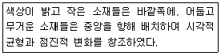
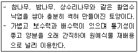
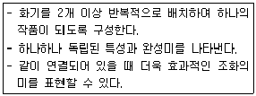
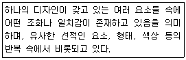

화훼장식기능사 (2011-07-31 기출문제)
1과목: 화훼장식재료
1. 꽃의 형태에 따른 분류 중 폼플라워(Form flower)에 사용되지 않는 것은?
- 안개꽃
- 백합
- 수선화
- 안스리움
(정답률: 86%)

2. 이른 봄철 잎이 나기 전에 꽃부터 먼저 피어서 화훼 재료로 이용되는 우리나라 자생 수종은?
- 조팝나무
- 모란
- 수수꽃다리
- 황매화
(정답률: 55%)
3. 작품을 강조하고 지배적인 형태를 이루어 표현 효과가 큰 꽃으로 넓은 공간을 필요로 하는 소재로 가장 적당한 것은?
- 툴립
- 극락조화
- 안개초
- 거베라
(정답률: 72%)
4. 건조소재 장식과 가장 거리가 먼 적은?
- 포푸리
- 분경
- 압화
- 망사잎
(정답률: 80%)
5. 밀폐된 투명한 플라스틱이나 유리용기 속에 식물을 심어 재배 관상하는 화훼장식의 이용 형태는?
- 디시가든
- 토피어리
- 수경재배
- 테라리움
(정답률: 86%)
6. 동양란에 속하는 것은?
- 파피오페딜룸
- 반다
- 한란
- 카틀레야
(정답률: 85%)
7. 내한성이 강한 노지 숙근 초화류는?
- 군자란
- 칼란코에
- 원추리
- 거베라
(정답률: 59%)
8. 온대지방에서 겨울나기가 가능하고, 가을에 심어야 하는 알뿌리 식물은?
- 칸나
- 글라디올러스
- 달리아
- 수선화
(정답률: 48%)
9. 열매를 감상할 수 있으며 행잉용으로 이용하기 가장 적합한 것은?
- 아나나스
- 팔손이
- 백리향
- 산호수
(정답률: 56%)
10. 토피어리에 관한 설명으로 옳은 것은?
- 어항과 같이 유리 용기에 수생식물을 심고, 거북이나 물고기를 넣어 기르는 것을 말한다.
- 파인애플과 식물이나 착생란 등을 나무, 돌, 숲 등에 붙여 심고 관상하는 것을 말한다.
- 식물의 가지를 전정하여 동물모양이나 기하학적 형태 등으로 디자인하는 것을 말한다.
- 접시와 같이 넓고 얕은 용기에 식물을 심어 작은 정원을 꾸미는 것을 말한다.
(정답률: 91%)
11. 학명의 표시방법으로 옳은 것은?
- 학명은 반드시 영어나 단어를 사용한다.
- 속명의 첫 글자는 소문자로 쓴다.
- 변종은 이탤릭체를 사용하고, var.나 v.로 표시한다.
- 명명자는 이탤릭체로 쓰고, 첫 글자는 대문자로 쓴다.
(정답률: 57%)
12. 속명의 연결이 틀린 것은?
- 단풍나무속 - Acer
- 수련속 - Nymphaea
- 진달래속 - Aconitum
- 장미속 - Rosa
(정답률: 52%)
13. 화훼식물의 분류에 대한 설명으로 틀린 것은?
- 군자란은 난과 식물이다.
- 팔손이는 관엽식물이다.
- 아이리스, 크로커스는 구근류에 속한다.
- 숙근류는 다년생으로 자라는 것을 말한다.
(정답률: 61%)
14. 구근의 형태에 따른 분류에서 구경(Corn)류 로만 나열된 것은?
- 튤립, 칼라, 글라디올러스
- 나리, 원추리, 산마늘
- 글라디올러스, 프리지아, 크로커스
- 꽃생강, 칼라, 수선화
(정답률: 58%)
15. 화목류 중 주로 잎을 관상하는 종류로만 나열된 것은?
- 단풍나무, 은행나무, 향나무
- 단풍나무, 좀작살나무, 은행나무
- 은행나무, 구상나무, 산딸나무
- 주목, 수수꽃다리, 모과나무
(정답률: 74%)
16. 절화 보관 중 에틸렌 가스 발생을 억제하는 데 가장 효과적인 것은?
- 질산은(AgNO3)
- 8HQC
- 구연산
- 탄산음료
(정답률: 64%)
17. 앉아서 좌담하는 테이블 장식용으로 주로 활용 되는 화형은?
- 높은 삼각형
- 수평형
- 수직형
- 폭포형
(정답률: 95%)
18. 테이블장식을 할 때 고려할 점으로 틀린 것은?
- 식욕을 돋기 위해 향기가 진한 소재를 주로 사용한다.
- 장식물의 높이는 시선보다 낮게 한다.
- 장소, 동기, 환경을 고려하여 제작한다.
- 음식문화에 따른 소재를 선택한다.
(정답률: 96%)
19. 리스에 대한 설명으로 틀린 것은?
- 리스는 화훼 소재를 이용하여 고리(ring)모양으로 만든 장식물이다.
- 리스는 리스 고리의 크기에 비해 두께가 가늘수록 모양이 좋다.
- 리스는 나무덩굴이나 짚, 로프, 철사, 철망, 이끼 등으로 만든 둥근 고리모양의 틀에 소재를 부착시켜 만들 수 있다.
- 리스는 플로랄 폼이 있는 고리모양의 틀에 꽃꽂이 하듯 소재를 꽂아 만들 수 있다.
(정답률: 89%)
20. 분식물 장식에 대한 설명으로 틀린 것은?
- 테라리움 - 라틴어로 흙이라는 의미의 Terra 와 방이라는 의미의 Arium의 합성어이다.
- 비바리움 - 유리용기 속에 도마뱀, 개구리 등의 동물과 식물이 공생하는 자연의 모습을 연출한다.
- 아쿠아리움 - 물고기 등을 넣고 수생식물을 띄워 키운다.
- 디시가든 - 깊이가 얕은 분에 목본식물을 인공적으로 생장 억제시켜 축소, 묘사한 것이다.
(정답률: 82%)
2과목: 화훼장식 제작 및 유지관리
21. 꽃줄기 속이 비어 있거나 잘 부러지는 소재의 경우 줄기 기부에서 철사를 끼워 넣는 방법은?
- 인서션 메소드(Insertion method)
- 크로스 메소드(Cross method)
- 피어스 메소드(Pierce method)
- 소잉 메소드(Sewing method)
(정답률: 88%)
22. 꽃다발(Handtied bouquet)에 대한 설명으로 옳은 것은?
- 묶음점 아래 부분 줄기에도 싱싱한 잎을 붙여 둔다.
- 묶은점을 단단하게 하기 위하여 최대한 넓은 폭으로 묶는다.
- 줄기 끝은 직선으로 자른 후 세울 수 있게 한다.
- 줄기는 나선형(spiral) 또는 평행형(parallel) 기법으로 제작한다.
(정답률: 79%)
23. 물주기에 대한 설명으로 가장 적합한 것은?
- 겨울철에도 신선한 찬물을 준다.
- 겉흙이 약간 마른 듯 할 때 물을 준다.
- 항상 토양을 촉촉하게 유지한다.
- 건조해지지 않도록 조금씩 자주 물을 준다.
(정답률: 82%)
24. 웨딩 부케에 대한 설명으로 틀린 것은?
- 일반적으로 모든 부케의 기본형태는 원형이다.
- 캐스케이드형(Cascade) 부케는 상부의 원형부케를 하부의 갈랜드와 연결한 것이다.
- 초승달형(Crescent) 부케는 선의 흐름을 최대한 돋보이게 하고 대칭적·비대칭적 제작 구성이 가능하다.
- 트라이앵글형(Triangular) 부케는 두 개의 갈랜드를 중심부에 연결하여 아름다운 곡선이 돋보이는 형태이다.
(정답률: 76%)
25. 원예용 배양토의 조건으로 적합하지 않은 것은?
- 배수성 및 통기성이 좋아야 한다.
- 보수력과 보비력이 높아야 한다.
- 일반적으로 산도가 높아야 한다.
- 병충해가 없는 무병토양이어야 한다.
(정답률: 93%)
26. 다음에서 설명하고 있는 디자인 기법은?

- 시퀀싱(Sequencing)
- 쉐도잉(Shadowing)
- 그루핑(Grouping)
- 클러스터링(Clustering)
(정답률: 78%)
27. 병렬형(Paralall) 디자인에 대한 설명으로 틀린 것은?
- 꽃줄기들이 수직의 선들로 무한정 확장되다가 한곳에서 만나게 되는 디자인이다.
- 규칙적으로 수평, 수직, 또는 규칙적인 대각선을 이루면서 평행으로 배치되는 디자인이다.
- 용기 안의 서루 다른 점으로부터 뻗어 나온 디자인이다.
- 경직되고 구조적으로 보이기는 하나 높이를 달리 하면 부드러워 보인다.
(정답률: 68%)
28. 식물이 자연 상태에서 살아있는 모습과 같은 형태로 조형하는 구성은?
- 그래픽 구성
- 구조적 구성
- 식생적 구성
- 장식적 구성
(정답률: 93%)
29. 비슷한 소재들을 계단식으로 꽂는 기법은?
- 레이어링(Layering)
- 테라싱(Terracing)
- 스태킹(Stacking)
- 시퀀싱(Sequencing)
(정답률: 88%)
30. 그루핑(Grouping)에 대한 설명으로 틀린 것은?
- 소재를 모으고 분류하며 강한 인상을 줄 수 있다.
- 소재를 분산시켜 구성하는 것보다 소재의 다양성 및 형태 등이 뚜렷이 구별되고 여백의 미를 강조할 수 있다.
- 각각의 요소가 모여서 조화로운 형태를 이루면 그루핑이라 하며 공통점이 없어도 된다.
- 색상. 질감, 형태 등이 비슷하여 조화를 이루고 통일 되도록 한다.
(정답률: 72%)
31. 장미꽃의 관리 요령으로 가장 적합한 것은?
- 줄기의 잎을 될 수 있는 한 많이 떼어낸다.
- 물속에 잠기는 잎과 노화된 잎은 떼어낸다.
- 잎과 가시는 모두 물속에 그대로 둔다.
- 보관용기 안에 빽빽하게 많이 넣을수록 좋다.
(정답률: 87%)
32. 페더링(Feathering)기법에 대한 설명으로 틀린 것은?
- 코사지나 터지머지(tuzzy - muzzy)등과 같은 섬세한 디자인을 할 때 사용된다.
- 카네이션, 국화 등의 꽃잎을 여러 장 겹쳐서 감아주는 기법이다.
- 하나하나의 꽃잎을 여러 장 겹쳐서 감아주는 기법이다.
- 꽃잎을 분해하여 새의 깃털처럼 처리한다고 하여 붙여진 이름이다.
(정답률: 45%)
33. 절화장식품 제작 후 배치장소로서 가장 적당한 곳은?
- 겨울철 난방기 옆
- 직사광선을 피한 밝은 곳
- 여름철 에어컨 앞
- 햇빛이 들며 바람이 부는 창문 앞
(정답률: 77%)
34. 평면적인 화면에 입체적인 생화나 건조 소재 등의 소재를 반 평면적으로 배치하여 표현하는 장식물은?
- 갈랜드
- 콜라주
- 리스
- 형상물
(정답률: 77%)
35. 다음은 무엇에 관한 설명인가?

- 바크
- 수태
- 부엽토
- 마사토
(정답률: 80%)
36. 다음 설명하는 동양식 절화장식은?

- 분리형
- 경사형
- 전개형
- 복합형
(정답률: 80%)
37. 에틸렌 발생 원인으로 가장 거리가 먼 것은?
- 썩은 사과
- 자동차 배기가스
- 카네이션 노화
- 오존
(정답률: 56%)
38. 공간장식을 하는데 있어서 직접적으로 고려해야 할 사항으로 가장 거리가 먼 것은?
- 공간의 전체적인 구도
- 장식할 공간의 전체적인 분위기
- 공간내부의 주 색상
- 장식공간의 주변 외부 환경
(정답률: 89%)
39. 소재의 형, 선, 각도를 강조하고, 형과 선이 두드러지게 대비되며 여백을 이용하여 소재의 아름다움을 강조한 형식은?
- 장식적 구성
- 식생적 구성
- 구조적 구성
- 형·선적 구성
(정답률: 88%)
40. 절화수명 연장 방법으로 틀린 것은?
- 줄기는 예리한 칼로 자른 즉시 물에 담가야 한다.
- 영양을 공급해 준다.
- 물통에 꽂을 때 줄기의 아랫잎을 보존한다.
- 에틸렌에 민감한 꽃은 분리하여 저장한다.
(정답률: 91%)
3과목: 화훼장식론
41. 토양의 수분이 과다할 경우 발생하는 현상이 아닌 것은?
- 토양 속의 공기함량이 감소한다.
- 통기 불량으로 뿌리가 썩는다.
- 유기물의 분해를 촉진한다.
- 토양 미생물의 활동을 억제한다.
(정답률: 63%)
42. 다음 설명하는 디자인 원리는?

- 강조
- 균형
- 통일
- 비례
(정답률: 56%)
43. 직선의 위치와 효과에 대한 설명으로 가장 거리가 먼 것은?
- 일반적으로 직선은 억제된 역동성을 갖고 있다.
- 수직으로 놓인 선은 대부분의 경우 수동적이며 아래로 떨어지는 효과를 갖고 있다.
- 조형 작업의 경우처럼 선들에 있어서도 양의 비례와 분배가 중요한 의미를 갖고 있다.
- 모든 방향의 선들을 한 작품 속에 같은 양으로 사용하게 되면 일반적으로 작품의 긴장감을 상실하게 된다.
(정답률: 45%)
44. 대칭균형에 대한 설명으로 가장 거리가 먼 것은?
- 중심 폭을 기준으로 양쪽에 같은 요소로 동일하게 배열 한다.
- 질서가 있어 안정된 느낌이다.
- 공식적이고 위엄이 있어 보인다.
- 자연스럽고 비정형적이며 생동감이 있다.
(정답률: 87%)
45. 화훼장식에 색채를 응용할 경우 고려할 점으로 틀린 것은?
- 통일성과 조화미를 갖는 색과 명도를 제공하는 것이 좋다.
- 작품의 전체적인 명도가 높을수록 크게 보이고, 낮을수록 작게 보인다.
- 꽃색을 안정감 있게 배색하려면 명도가 높은 꽃을 아래쪽에 비치하는 것이 좋다.
- 시선의 주의력을 집중적으로 드러나게 할 경우 따뜻한 계통의 색을 이용한다.
(정답률: 62%)
46. 대비(對比)에 의한 강조 효과를 가장 얻기 어려운 것은?
- 대부분의 것이 어두울 때 하나의 밝은 형태인 것
- 대부분의 것들이 수직일 때 사선인 것
- 대부분의 것들이 비슷한 크기일 때 의외로 작은 것
- 형태의 대부분이 평행사변형일 때 직선인 것
(정답률: 61%)
47. 서양의 꽃문화에 대한 설명으로 옳은 것은?
- 르네상스 시대는 종교적 의미를 담은 꽃꽂이를 하거나 줄기가 보이지 않을 정도로 꽃을 가득 채운 원추형, 원형 등의 꽃꽂이 형태가 일반적이었다.
- 영국의 화가 윌리엄 호가스에 의한 초승달형 화훼장식이 유행하였다.
- 빅토리아 시대는 암울한 시대상황으로 꽃문화가 융성하지 않았다.
- 미국 초창기의 꽃문화는 빅토리아안 양식에 영향을 받아 부채모양이 일반적이었다.
(정답률: 60%)
48. 꽃의 건조방법에 대한 설명으로 틀린 것은?
- 열풍건조는 열풍건조기를 이용하여 많은 건조화를 생산하며, 꽃을 빠르게 건조시키면서 변색이 적고 형태유지가 가능하다.
- 동결건조는 형태와 색상이 그대로 유지되고, 공기 중에서 수분흡수가 적어 밀폐되지 않은 공간장식에 많이 이용된다.
- 실리카겔을 이용한 매몰건조는 형태와 색상변화가 적으나 공기 중 수분을 쉽게 흡수하므로 밀폐공간이나 피막처리하여 장식해야 한다.
- 누름건조를 이용한 건조화를 누름꽃이라 하고, 밀폐용 액자와 평면장식에 이용된다.
(정답률: 73%)
49. 한색(寒色)과 난색(暖色)에 관한 설명으로 틀린 것은?
- 파란색의 차가운 색을 배경으로 한 녹색은 따뜻하게 보인다.
- 오렌지색의 따뜻한 색을 배경으로 한 녹색은 차갑게 느껴진다.
- 빨간색, 갈색, 연두색은 난색이고, 녹색, 노란색 청보라색은 한색이다,
- 색을 보면서 따뜻하거나 차갑다고 느끼는 감정은 색채와 사물의 경험적인 현상으로 서로 다른 감각세계의 느낌을 말한다.
(정답률: 73%)
50. 색채에 대한 설명으로 틀린 것은?
- 단파장의 색은 차가운 색이다.
- 스펙트럼에 나타나는 빨강, 파랑, 노랑 등의 유채색을 종류별로 나눌 수 있는 색깔을 말한다.
- 3차색은 서로 다른 2차색을 같은 양으로 혼합한 것이다.
- 먼셀은 빨강, 노랑, 파랑, 초록, 보라 다섯 색을 중심으로 각각의 중간색을 택하여 10색을 기본색으로 정했다.
(정답률: 46%)
51. 화훼장식 디자인을 할 때 우선적인 용도에 맞도록 몇 가지 고려사항이 있는데 그 중 포함되지 않는 것은?
- 시간
- 장소
- 목적 및 동기
- 독창성
(정답률: 72%)
52. 다음 중 꽃꽂이의 특징에 대한 설명으로 가장 거리가 먼 것은?
- 꽃을 잘라 줄기가 물을 흡수할 수 있도록 용기에 꽂는데서 시작하였다.
- 고정용 소재로는 반드시 플로랄 폼만 사용해야 한다.
- 장소의 특성, 이용자의 요구사항에 따라 디자인이 달라질 수 있다.
- 다양한 식물 외에 부소재와 조형물을 함께 응용할 수 있다.
(정답률: 97%)
53. 유럽의 신부용 부케에서 다산의 의미로 사용된 것은?
- 장미
- 벼이삭
- 월계수 잎
- 올리브 열매
(정답률: 78%)
54. 다음 중 압화의 소재로 이용하기 가장 어려운 것은?
- 극락조화
- 팬지
- 숙근안개초
- 코스모스
(정답률: 80%)
55. 우리나라 화훼장식의 역사에 관한 설명으로 옳은 것은?
- 고려시대부터 화훼식물을 이용한 장식이 시작되었다.
- 고려초기에는 꽃꽂이의 형태적인 구성이 자연스럽고 부드러운 반원형 삼존 형식으로 나타났다.
- 조선시대 초기의 그림에 병에 꽃가지를 꽂아 책상위에 올려두는 일지화가 많이 나타난다.
- 고려 및 조선시대는 절화를 이용한 화훼장식은 활발하게 이루어졌으나, 화분에 심어서 이용하는 형태는 거의 이루어지지 않았다.
(정답률: 51%)
56. 실내의 한 벽면에 커다란 소파를 놓고 그 벽면에 그림 한 장을 걸었을 때 그 그림이 너무 크다거나, 작다거나 또는 아주 적당하다는 느낌을 주는 것은 디자인 원리 중 주로 무엇에 의한 것인가?
- 조화(Harmony)
- 비례(Proportion)
- 통일(Unity)
- 리듬(Rhythm)
(정답률: 68%)
57. 꽃다발(Handtied bouquet)을 제작할 때 사용할 부소재로 가장 적합한 것은?
- 플로랄 폼
- 라피아
- 용기
- 침봉
(정답률: 85%)
58. 조화(Harmony)의 특징으로 가장 거리가 먼 것은?
- 서로 다른 요소들 통합되어 상호관계를 이루는 것을 말한다.
- 일정한 크기의 비율로 증가 또는 감소되는 상태를 말한다.
- 소재끼리 갖는 색상의 유사나 보색 대비를 통하여 이루어지도록 한다.
- 다양함 속의 통일을 지향한다.
(정답률: 75%)
59. 화훼장식의 정의로 가장 적절한 것은?
- 울타리가 있는 땅 안에서 화훼식물을 재배하는 것
- 식물을 심고 가꾸고 이용하는 것
- 화훼식물을 주소재로 미적인 장식물을 제작, 설치, 유지, 관리하는 것
- 절화와 분식물을 이용하여 실내를 장식하는 것
(정답률: 82%)
60. 건조 소재에 관한 설명으로 틀린 것은?
- 열매와 꼬투리는 꽃과 다른 느낌으로 아름다워서 많이 이용된다.
- 이삭을 이용할 때 완전히 성숙한 단계에서 채취하는 것이 좋다.
- 나뭇가지와 덩굴을 특별한 처리가 없어도 이용할 수 있다.
- 최근에는 독특한 모양과 향을 가지고 있는 허브류가 건조소재로 많이 사용된다.
(정답률: 62%)